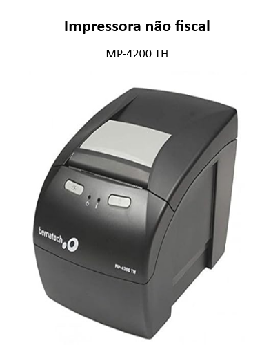

IMPRESSORA MP-4200 TH ADV

Driver – Spooler 4.5.0.0
Bema User Software 2.10.05
Verificar se a porta COM está correta.
Autoteste: Desligar a impressora e ligar novamente segurando o botão FEED
Led I se tiver apagado ou se estiver piscando vermelho, enviar para AT.
Em caso de falha de comunicação apontar o andros: C:\Program Files (x86)\Bematech\Printers\Spooler\Andros
Duvidas verificar base de conhecimento